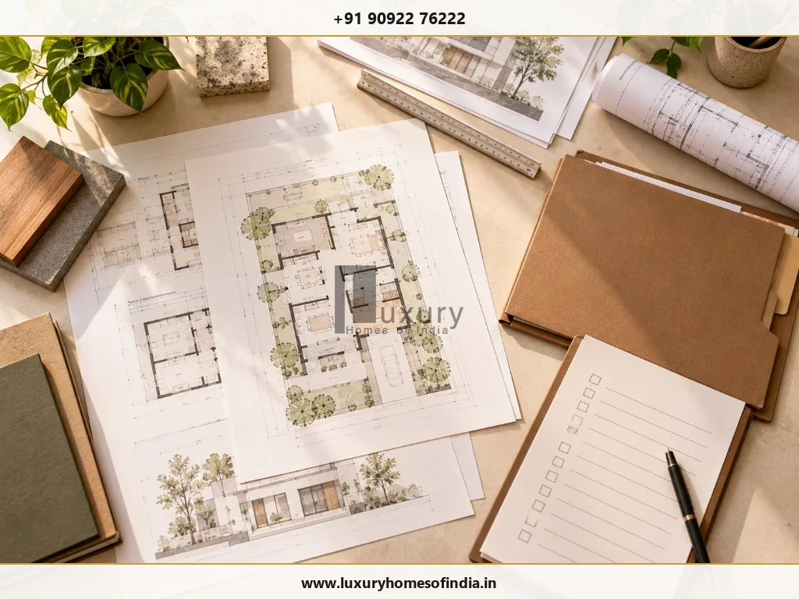

Completion Certificate in Chennai: Rules, Documents and Application Process
Understanding TNCDBR 2019 Rule 20 provisions, Form 5 submission, GCC/CMDA procedures, electricity/water connection rules, and as-built drawing reviews.
Executive Summary: Completion Certificate Compliance
A Completion Certificate (CC) is a building-compliance document certifying that construction has been completed in accordance with the sanctioned plan and applicable requirements. Governed by Rule 20 of the Tamil Nadu Combined Development and Building Rules, 2019 (TNCDBR), obtaining a CC depends on your building category, height, dwelling units, and built-up area. Before applying, review as-built construction against sanctioned drawings with a registered architect or engineer, prepare prescribed Form 5 completion reports, and confirm whether your building requires a CC for utility service connections (electricity and water).
On this page:
A Completion Certificate (CC) is a building-compliance document associated with the completion of construction in accordance with the approved plan and applicable requirements. If you are building a house in Chennai, the first step is to establish whether your property falls within a category that requires the certificate or qualifies for an exemption. The answer depends on the building's characteristics, the applicable provisions of Tamil Nadu's Combined Development and Building Rules, 2019, subsequent amendments and the approval route for the property.
Before applying, organise the sanctioned building plan, planning permission and building permit, and ask your registered architect or engineer to compare the completed construction with the approved drawings. Then confirm the current procedure, prescribed forms and supporting documents with the competent authority. This is particularly important because older online guidance may reflect earlier rule wording. A well-organised completion process helps homeowners identify discrepancies, prepare records and plan documentation before handover, without assuming that every property follows the same requirements.
1. What is a Completion Certificate?
A Completion Certificate is a document issued through the applicable building-completion process. It relates to whether the building has been completed in accordance with the approved plan and relevant requirements.
Rule 20 of the Tamil Nadu Combined Development and Building Rules, 2019, addresses the Completion Certificate procedure. The applicable provisions refer to a completion report and prescribed forms submitted to the competent authority for the relevant planning permit.
A Completion Certificate is distinct from:
- Planning permission and the building permit.
- Property ownership and title documents.
- Other approvals or technical certificates that may apply to a particular property.
Do not assume that obtaining a certificate automatically resolves unauthorised construction or every deviation from an approved plan. The applicable position must be assessed under the relevant rules.
For a homeowner, the starting question is simple: Does this particular building require a Completion Certificate, or does an applicable exemption cover it?
2. Is a Completion Certificate Compulsory for Every New House in Chennai?
No single answer should be applied to every house. The requirement depends on the building category and the current provisions of the applicable rules.
The original 2019 rules included exemptions for specified residential buildings. Subsequent amendments changed some of the wording. As a result, an older article may not accurately reflect the requirements applicable to a project today.
Before deciding whether a certificate is required, check:
- The building's height and number of dwelling units.
- The applicable built-up area and other relevant characteristics.
- The exact wording of the relevant exemption.
- Amendments and notifications applicable to the property.
- The authority responsible for the original planning permission.
- Any additional conditions attached to the approval.
Do not rely solely on the description “independent house” to determine whether a certificate is required. Ask the registered architect or engineer responsible for the project to identify the applicable provision and confirm it with the competent authority.
Official Rules & Authority Verification Links
These resources are starting points for verification. Check the latest applicable amendments rather than treating the original 2019 text as a complete statement of current law.
3. Which Authority Handles a Completion Certificate in Chennai?
The competent authority depends on the property's location, building category and approval route.
For properties within Greater Chennai Corporation's jurisdiction, the Corporation's Town Planning Department provides information about building permits and planning procedures. Other categories or applications may fall under CMDA or another competent authority.
Start by locating the original planning permission and building permit. These documents help establish which authority handled the approval and where the completion procedure should be verified.
Before submitting an application, confirm:
- Which authority is responsible for the property.
- Whether a Completion Certificate is required.
- Which submission method and prescribed forms currently apply.
- Whether additional professional declarations, records or inspections are required.
Do not assume that every property owner should follow the same portal or application route.
4. Documents to Prepare Before Applying
The precise submission requirements must be checked against the current rules and the competent authority's instructions.
Rule 20 of the 2019 rules refers to a completion report in Form 5 together with Forms 6, 7 and 8 in Annexure XIV for the buildings covered by the relevant provision. Confirm that these forms and references remain applicable to the specific application before using them.
Homeowner Preparation Checklist
Use the following as a preparation checklist, not as a universal list of mandatory enclosures:
- Sanctioned building plan and relevant approval drawings.
- Original planning permission and building permit.
- Applicable completion report and prescribed forms (Form 5, etc.).
- As-built drawings or records, where required.
- Relevant declarations or certificates from registered professionals.
- Technical or safety documents required for the building category.
- Records of approved revisions made during construction.
- Any additional documents requested by the competent authority.
- Copies of submitted applications, acknowledgements and official correspondence.
Keep the records organised and consistent. Differences between drawings, forms and actual construction can delay the assessment or require clarification.
5. How to Apply for a Completion Certificate in Chennai
The exact procedure must be confirmed with the competent authority. The following sequence is a practical preparation guide rather than a guarantee of the steps or processing time for every application.
- Step 1: Confirm the requirement: Identify the building category and verify the applicable rule, exemption and current amendments. Obtain professional confirmation before deciding that an application is unnecessary.
- Step 2: Collect the approved documents: Gather the sanctioned drawings, planning permission, building permit and records of approved revisions. Use the approved documents as the reference for the completion review.
- Step 3: Compare the completed building with the approved plan: Ask the registered architect or engineer to review the as-built condition. Check relevant details such as building height, setbacks, number of floors, built-up area, use and other parameters applicable to the approval.
- Step 4: Prepare the relevant forms and records: Use the current prescribed forms and completion report, where required. Ensure that the information agrees across the application, drawings and supporting records.
- Step 5: Submit through the prescribed route: Follow the current procedure of the competent authority. Confirm whether the application is online, what supporting records are needed and whether professional certification is required.
- Step 6: Address any queries or inspection requirements: If the authority requests clarification, additional documents or corrective action, respond through the prescribed process. Keep copies of submissions and communications.
- Step 7: Retain the official outcome: Keep the issued certificate, where applicable, or the relevant official record confirming the outcome of the process. Store it alongside the approved drawings, permit and other property records.
Submitting an application does not, by itself, establish that a certificate has been issued.
6. What Should Be Checked Before Completion?

The applicable checks depend on the building and its approval conditions. A structured review helps identify discrepancies before the completion application or handover.
- Approved layout and building dimensions: Compare the completed construction with the approved drawings, including relevant floors, height, setbacks, built-up area and approved use.
- Access and circulation: Check the applicable provisions for access, stairs and other required building features against the approved design and relevant requirements.
- Structural and technical records: Confirm which declarations, technical records and supporting documents are required from the registered professionals involved in the project.
- Services and approval conditions: Review the conditions and documentation applicable to building services and other required installations. Do not assume that every building category has the same submission requirements.
The purpose of this review is to identify issues that need attention—not to substitute a generic checklist for professional assessment or official verification.
7. What If the Completed House Differs from the Approved Plan?
Review any discrepancy before submitting a completion application.
Potentially material differences can include:
- An additional floor or change in building height.
- Changes to setbacks or required open spaces.
- Increased built-up area.
- A change in approved use.
- Alterations that affect structural safety, access or other applicable requirements.
The appropriate response depends on the type and extent of the deviation and the rules that apply to the property. Some changes may require revised approval; others may not be permissible or eligible for regularisation.
Ask the registered architect or engineer to compare the as-built condition with the sanctioned drawings and explain the available regulatory options. Confirm the correct route with the competent authority before assuming that a fee, revised drawing or retrospective application will resolve the issue.
8. How Can Completion Documentation Affect Electricity and Water Connections?
The Tamil Nadu building rules address Completion Certificates in relation to certain service connections, including electricity, water supply and sewerage. The relevant requirement and any exemption must be checked against the current provisions and the building category.
Before arranging final connections, confirm:
- Whether a Completion Certificate is required for the building.
- Whether the relevant service provider requires that certificate or another prescribed document.
- Whether an applicable exemption covers the property.
- Whether other technical or inspection requirements apply.
A utility connection, property-tax record or other administrative document should not automatically be treated as proof that every building approval requirement has been satisfied.
9. Why Should Completion Documentation Be Planned Early?
Completion documentation is easier to manage when it is considered during construction rather than left until handover.
Homeowners and project teams can reduce avoidable confusion by:
- Keeping approved drawings and permits organised.
- Recording approved design changes.
- Reviewing deviations while they can still be assessed.
- Maintaining relevant technical records and declarations.
- Identifying the competent authority early.
- Confirming what must be retained at handover.
For a premium residence, this is particularly relevant when changes affect the building envelope, floors, setbacks, services or external works. The goal is to coordinate design decisions, construction records and compliance checks before they become last-minute issues.
10. Common Mistakes to Avoid
- Relying on old exemption wording: Check the current rules and relevant amendments before deciding whether a certificate is required.
- Assuming every independent house is exempt: Confirm the actual building characteristics and applicable exemption.
- Assuming every building follows the same process: Requirements depend on the building category and approval route.
- Ignoring differences from the sanctioned plan: Have discrepancies reviewed before applying.
- Using outdated forms: Verify the current prescribed forms and supporting documents with the competent authority.
- Confusing a building permit with a Completion Certificate: They serve different purposes in the approval and completion process.
- Treating utility connections or property-tax records as conclusive proof of compliance: Verify the status of the applicable building approvals separately.
Planning a New Home Construction in Chennai?
Discuss your construction planning, structural engineering, and completion documentation priorities with Luxury Homes of India’s team to ensure seamless design coordination and handover compliance.
11. Frequently Asked Questions
Plan Completion Documentation Before Handover
For a new house in Chennai, begin by establishing whether a Completion Certificate is required, identifying the competent authority and reviewing the completed building against the sanctioned plan. Confirm the current rules, amendments and application procedure for the specific property before relying on a general statement about exemptions.
Discuss completion documentation with your architect and construction team early enough to organise records and review discrepancies before handover.
Planning a new home? Discuss your construction planning and documentation priorities with your project team so that design coordination, records and handover preparation are considered from the beginning.
Disclaimer: This article provides general homeowner information and is not a legal opinion. Requirements and exemptions must be verified for the specific property under the current applicable rules.